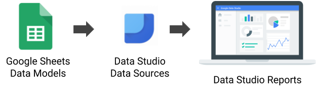
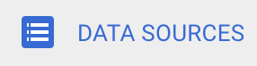
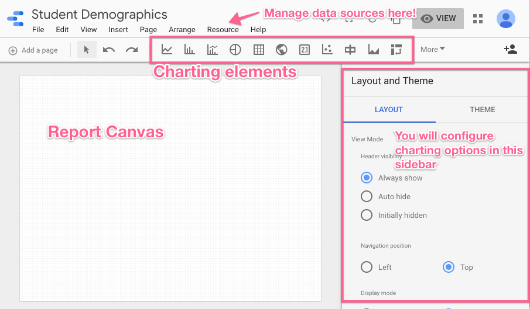
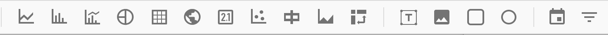
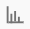
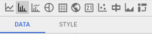
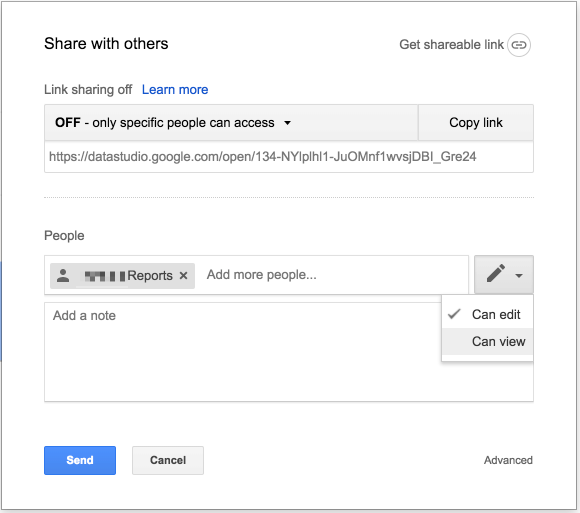
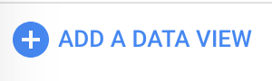
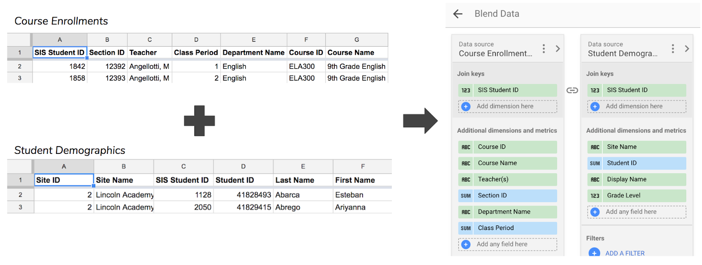

This tutorial is going to walk you through how the various components of Google Data Studio work together to create your Data Studio report. We will walk through data sets, data sources, and have you try your hand at some report components such as charts, tables, and filters.

As a refresher to the process, the above image shows the steps we will take to reach a final Data Studio report. We will start by helping you gain access to a fake data set of student demographics. This will take the form of a Google Sheet. From there we will connect it to a Data Source mapping each field name to a field type such as Text or Number. Once we have our data source configured, we will create a report mapping those data fields to chart elements.
Before we dive into Google Data Studio itself, you need access to the data set used in this tutorial. We will be using a Google Sheet consisting of fake student demographic data. Clicking on the button below will cause Google to prompt you to make a copy of the Google Sheet.
Now that you have a data set, we want to connect it to Google Data Studio via a data source. For a data set, this only needs to be completed once. This is because a data source can be used in multiple reports. If you decide to create a second student demographics focused report later on, you can reuse this data source without needing to create a new one.
- Sign into Google Data Studio
- Click on  along the left hand side
- Click to create a new data source
- Find the Google Sheets connector and click Select
- Find your data set and click

This will take you to a page where you can define the fields in the data set. On this page you can rename fields, change the field type, and set the default aggregation type. Take some time to rename fields and change field types if necessary and then click  . Data Studio will create a new report for you and confirm they are adding your new data source to this report.
. Data Studio will create a new report for you and confirm they are adding your new data source to this report.
If you have experience with the G Suite, you'll likely be familiar with most of the interface in Google Data Studio.

Resource Menu
If you ever need to return to the data sources screen to modify field names and data types, this is where you want to go. Resource → Manage added data sources.
Charting Elements
The report canvas can include text, images, and (of course) charts. This toolbar will give you quick access to all of your options. We will learn the bar chart in the next step of this tutorial. You should take time later to explore all charts available. Data Studio makes it easy to play with charts and delete them if they are not working. Full chart references can be found on Google's support site.

Sidebar
You'll see in the next step that when working with specific charts, the sidebar will transform to be your one stop shop for configuring that chart.
Let's dive in and create our first chart! When creating a chart, it's important to consider the type of information you're wanting to show and how the underlying data is structured. It's helpful to start with a statistical question that you hope to be able to answer when looking at the chart. We're going to start simple. We're going to answer the question "How many students are enrolled in each grade level?" using a bar chart.
- Click the bar chart button. 
- Now you have an object that you can add to the report using the cursor. Click and drag your cursor to add the chart to the desired size (don't worry, it's like Google Drive, you'll be able to tweak it later!).
- Once the chart is created, you'll notice that Google Data Studio pre-fills the chart with data from your data source and a sidebar opens on the right of the screen. The header of which should look like this:

To configure the report, you'll need to stay in the "Data" tab.
- Dimensions describe. Metrics measure. In our question "How many students are enrolled in each grade level?" the dimension, or field we are using to describe the data, is grade level. In the "Available Fields Column," select the dimension "Grade Level" and drag it to replace the green dimension field. OR Click the default green dimension field and select "Grade Level" from the list.
Anthony
Sharing is the same as any Google Drive file! Whether you are in edit mode or view mode, you will see this icon  at the top of the page. You will be presented with the same share box available across many Google Products. You can decide to share individually, with a group, or create a shareable link.
at the top of the page. You will be presented with the same share box available across many Google Products. You can decide to share individually, with a group, or create a shareable link.

As you get more comfortable with data sources in Google Data Studio, you may find that you need to combine data sources to create a unified data source. This is where data blending comes in! To help us understand data blending, let's give an example. You currently have a data set that gives you student demographic data. Let's say we want to create a report that looks at course enrollment data and also include student demographic data in that report. Take a moment to copy the Google Sheet below and look over our fake course enrollment data.
One option would be to add columns to the course enrollment Google Sheet to include student demographic data. We could copy it in from our Student Demographics Google Sheet, but this creates a problem. We would then have information such as grade level stored in multiple Google Sheets. If we needed to update a student's grade level, we would need to update multiple sheets and that can get confusing fast.
Instead you are going to create a new data source (following the process outlined in step 3 of this tutorial) for course enrollment data and create a new report. Once you have that new report, head to Resource → Manage blended data and click . Create a data view that looks similar to the right side of the graphic below. You did it! Click Save and Close and try adding a table using this new blended data source.

Anthony